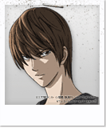
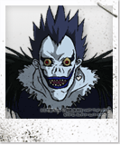
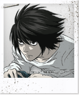
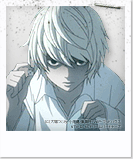
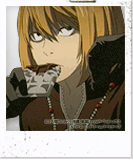
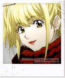

|  |  |  |
Light Yagami |
Ryuk |
L |
Depois de descobrir o Death Note , ele decide usá-lo para livrar o mundo de criminosos. Suas mortes são eventualmente rotuladas por pessoas do Japão como a obra de " Kira " |
Ryuk é um Shinigami que indiretamente dá Light Yagami um Death Note . Ryuk está entediado com o Reino Shinigami . Em um esforço para se divertir, ele rouba um segundo Caderno e o coloca no Mundo dos Humanos para que alguém a encontre. |
L é um detetive de renome mundial que assume o desafio de pegar o serial killer conhecido apenas como Kira . Em sua investigação, L se torna altamente suspeito de Light Yagami e torna-se seu objetivo de provar que a Light é Kira |
|  |  |  |
Near
MelloMisa Amane | ||
Near é o mais novo dos dois sucessores de L , criado na casa de Wammy - orfanato de Watari para crianças superdotadas em Winchester, Inglaterra. Após a morte de L, Near começa sua investigação do caso Kira , reunindo provas durante um período de quatro anos. Pouco depois, Near se torna o chefe da Provisão Especial para Kira e Depois de fazer contato com " L " ( Light Yagami ), Near começa a suspeitar que o segundo L é também Kira. |
Mello é o mais velho dos dois sucessores de L , criado na casa de Wammy - orfanato de Watari para crianças superdotadas em Winchester, Inglaterra. Quando Roger decide que Mello deve trabalhar com Near para capturar Kira , ele recusa, citando uma incapacidade de trabalhar com alguém a quem ele é considerado "segundo". Ele sai do orfanato logo depois, dizendo "eu vou encontrar o meu próprio caminho", e ele finalmente busca ajuda da máfia . |
Misa Amane é uma modelo e defensora de Kira que eventualmente se torna o Segundo Kira. Depois de ganhar um Death Note , ela procura Kira para agradecer-lhe por matar o homem que assassinou sua família e oferecer-lhe sua ajuda. Tendo feito o comércio para os Olhos Shinigami , Misa aprende que a identidade de Kira é Light Yagami . Depois de uma reunião com Light, ela decide dedicar sua vida a ajudar a ajuda-lo, no entanto ela pode, e se determina a usar seus olhos para descobrir o verdadeiro nome de L |